As imagens geradas por IA combinam criatividade e precisão, transformando ideias em visuais impressionantes com texturas e detalhes incríveis. 🎨✨.
Elas podem reproduzir estilos artísticos variados, criando composições únicas que expandem os limites da imaginação. 🚀 .
Imagens com todas as energias existentes dentro e fora do nosso ser.Imagens Diversas de Alta Qualidade.
.png) 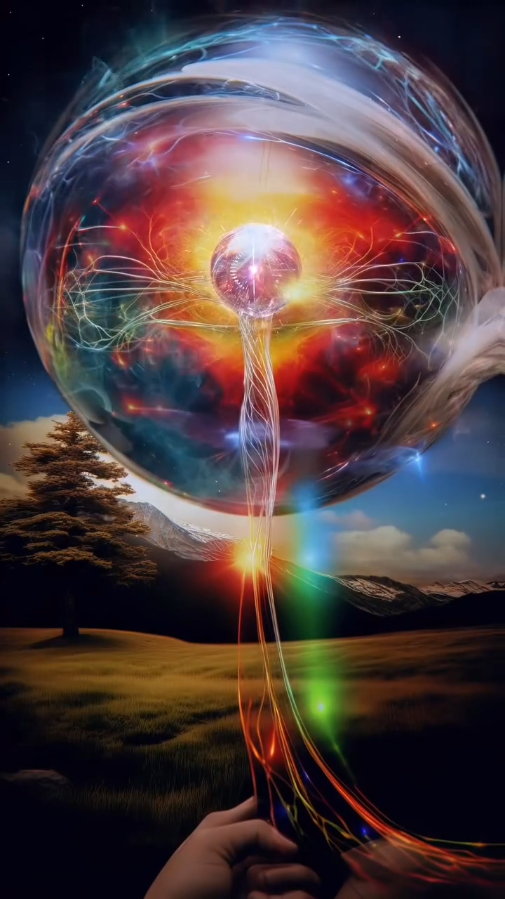
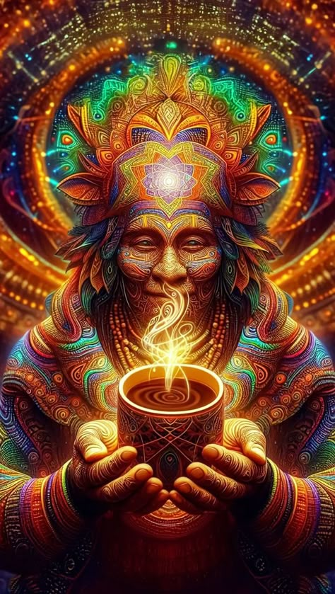
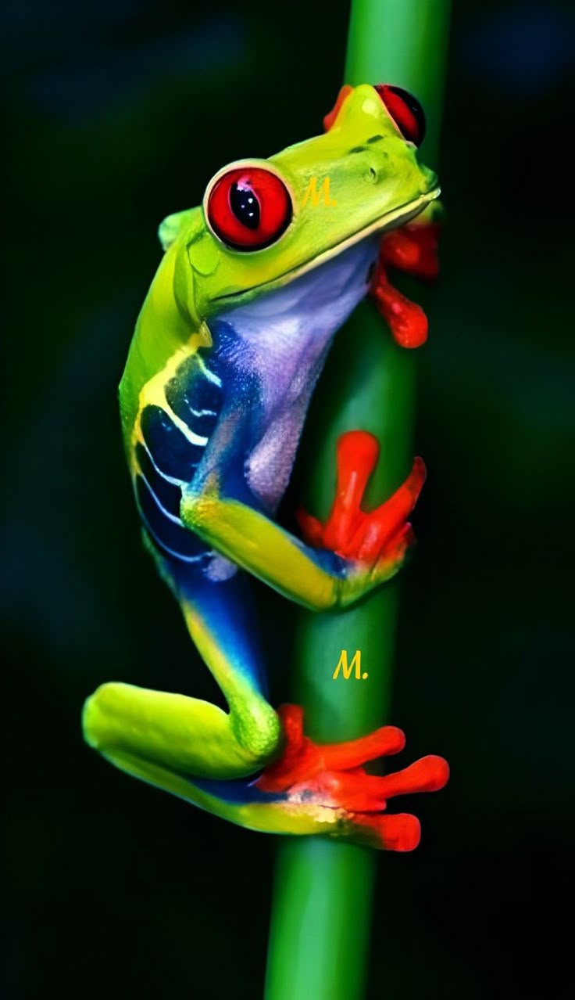
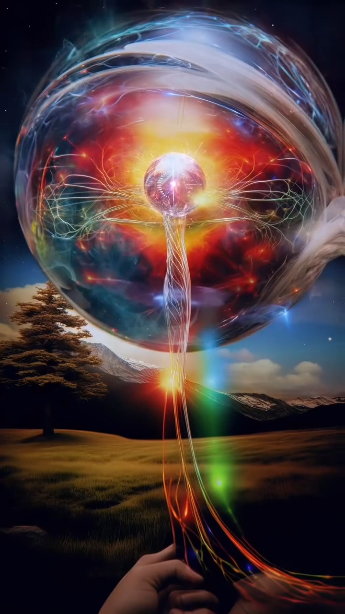
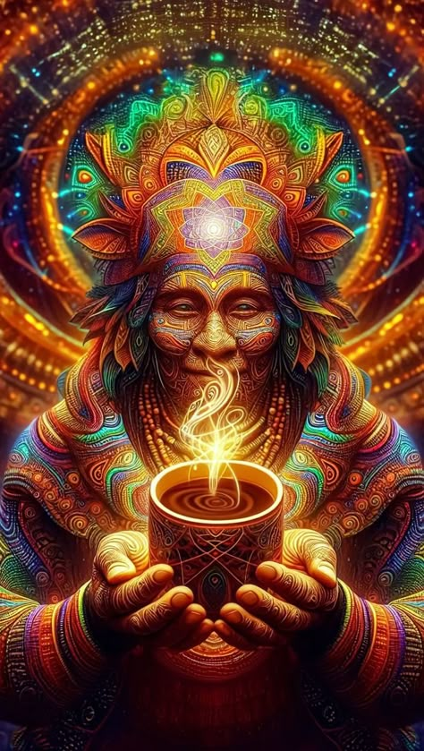
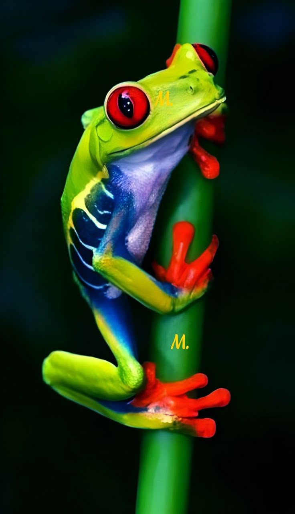
.png) 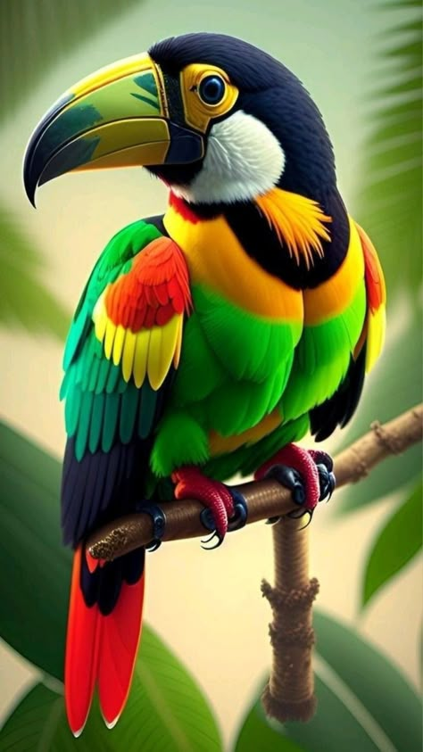
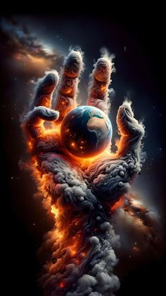
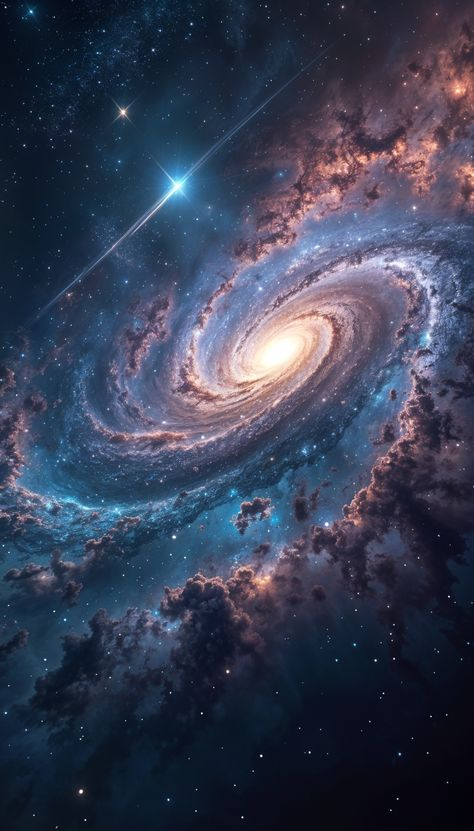
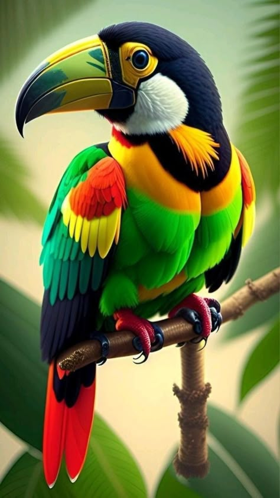
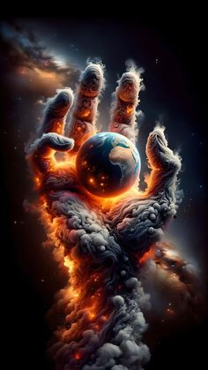
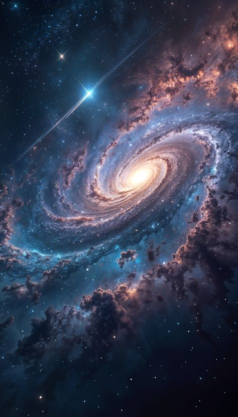
.jpg) 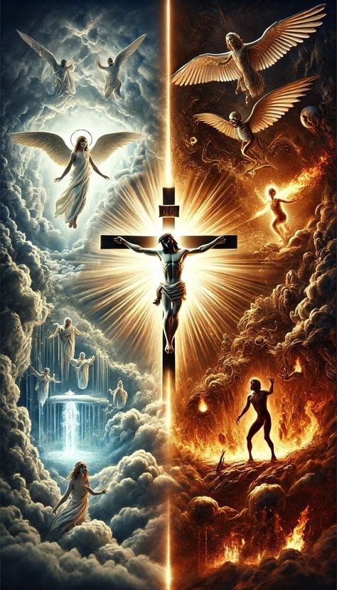
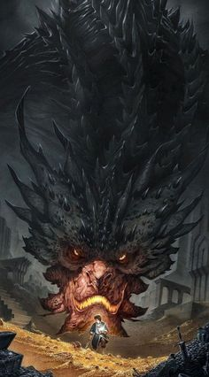
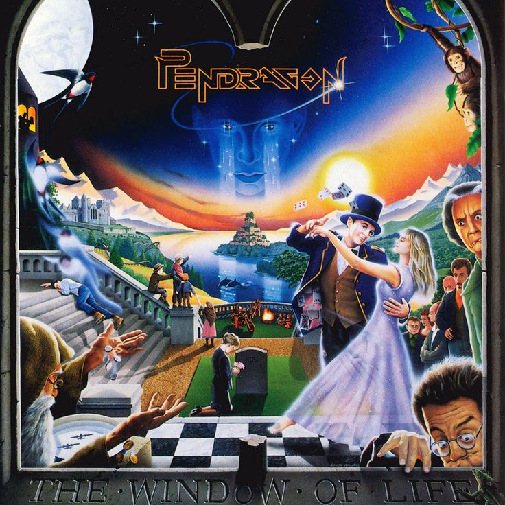
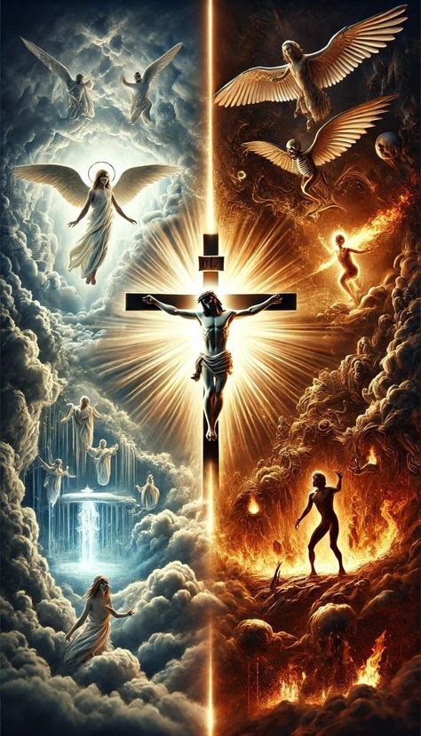
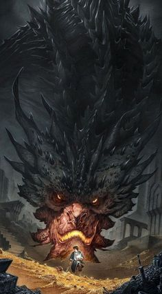
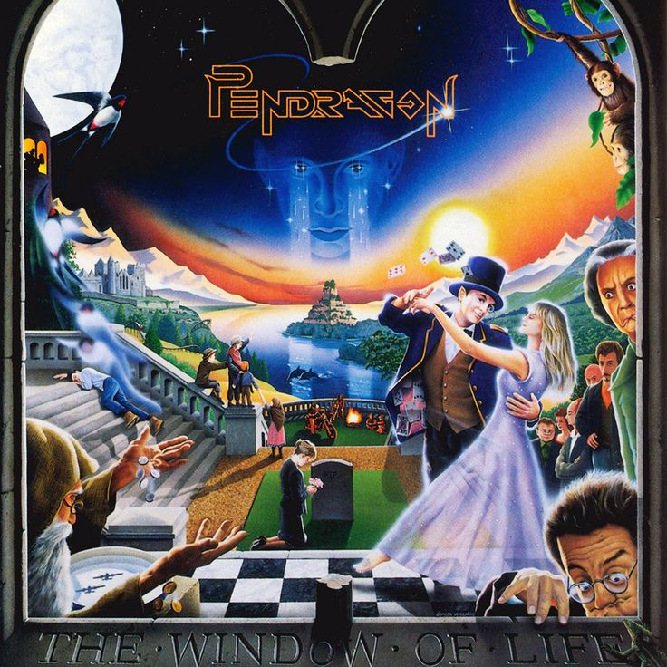
IA Generation.
 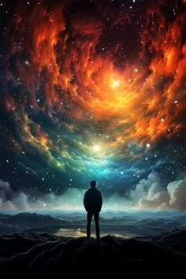
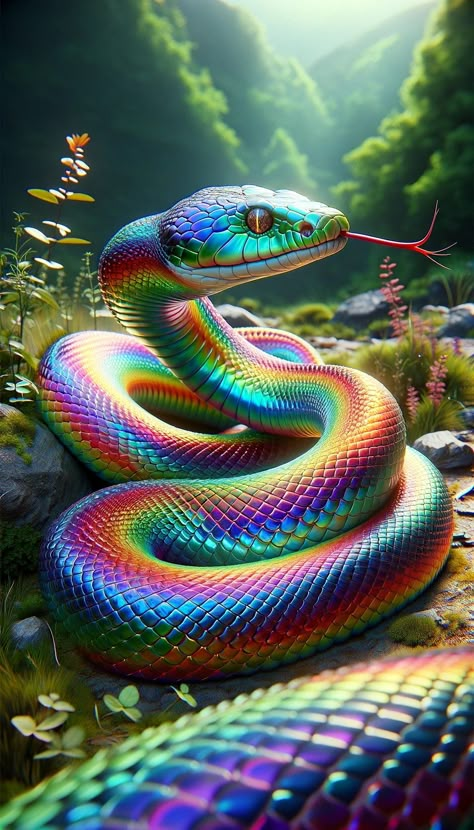
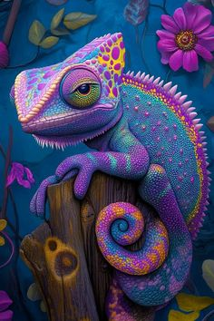
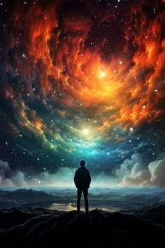
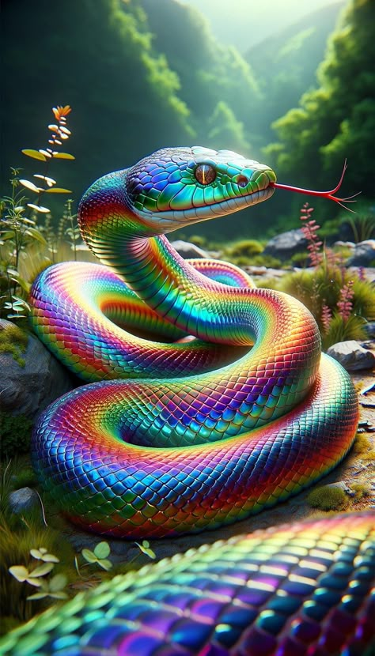
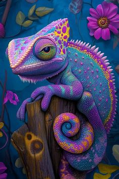
.jpg)
.jpg)
.jpg)
.jpg)
Sobre Nós
🎨 **Sobre Jorge Trilhas – A Magia da Criação com Imagens IA** 🎨 ✨ **Transformando ideias em arte digital fascinante** ✨ Jorge Trilhas é um criador apaixonado que explora o poder da **inteligência artificial** para dar vida a imagens inovadoras e envolventes. Seu trabalho é uma fusão de tecnologia e criatividade, resultando em composições que despertam emoções e contam histórias únicas. Aqui, o digital se encontra com o extraordinário. 🌟 **O Diferencial de Jorge Trilhas:** 🖌️ **Estilo Autoral:** Cada criação é única, baseada em combinações sofisticadas de formas, cores e luzes. 🤖 **IA como Ferramenta Artística:** Utiliza algoritmos avançados para transformar conceitos abstratos em visuais impressionantes. ✨ **Personalização Criativa:** Produz imagens sob medida, adaptadas a diferentes temas e atmosferas. 💼 **Serviços Exclusivos:** 🎭 **Arte Digital Personalizada:** Imagens exclusivas para projetos criativos e campanhas visuais. 🔮 **Exploração Estética:** Criações que misturam surrealismo, futurismo e realismo digital. 🖼️ **Imagens para Impressão:** Designs sofisticados para decoração e exposições. 📽️ **Visuals para Mídias e Eventos:** Arte dinâmica para apresentações e storytelling visual. 🌟 **Depoimentos:** _"Jorge Trilhas transforma conceitos em imagens que encantam. Cada obra é um universo digital à parte."_ – Designer _"Suas criações trazem uma nova dimensão à arte visual. Uma experiência surreal!"_ – Artista 📞 **Entre em Contato:** Descubra a arte digital que redefine possibilidades! 🌐 Instagram: @jorgetrilhas 📩 E-mail: sabinosantana@yahoo.com.br ✨ **Jorge Trilhas – Cada imagem, uma nova realidade.** 🚀 Se quiser ajustes ou um toque ainda mais especial, estou aqui para ajudar! 🎨💡
Fale Conosco
Contato
Telefone: 11 987896337
Email: sabinosantana@yahoo.com.br